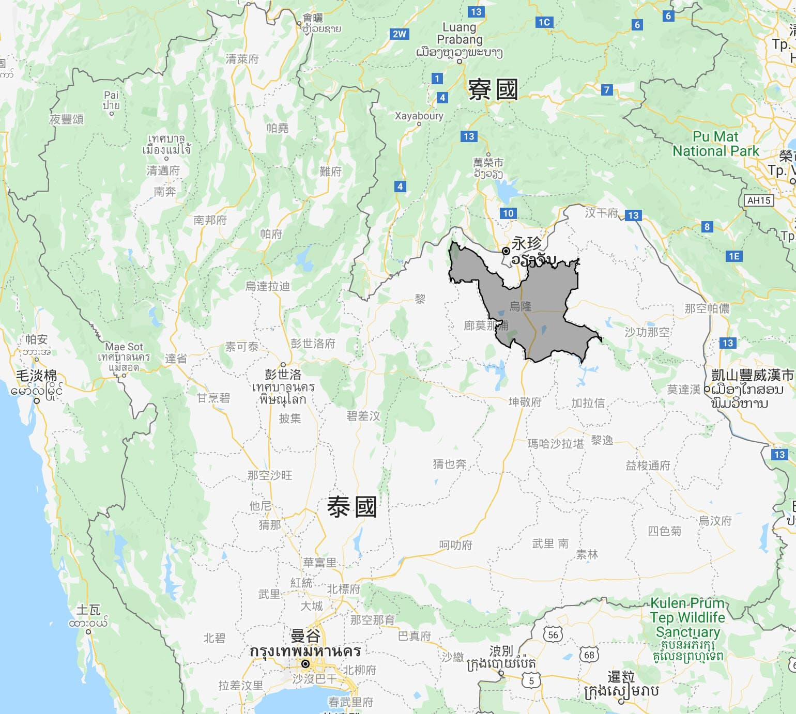
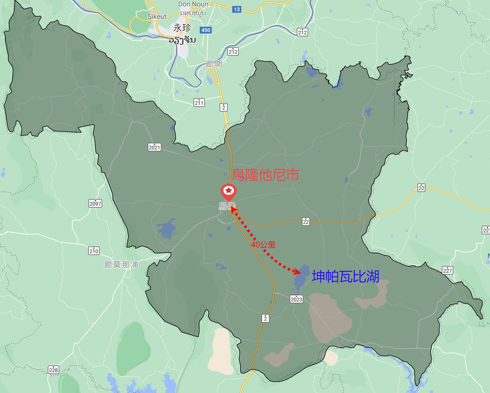
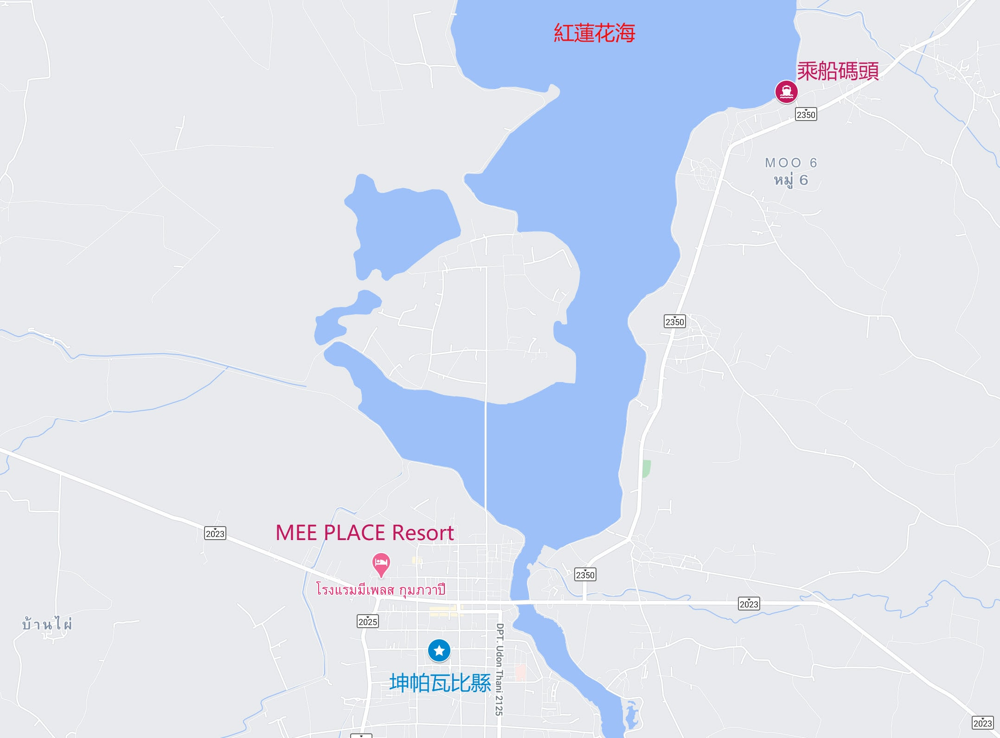
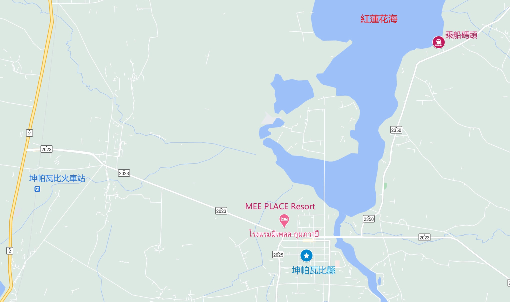
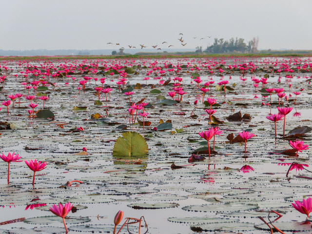
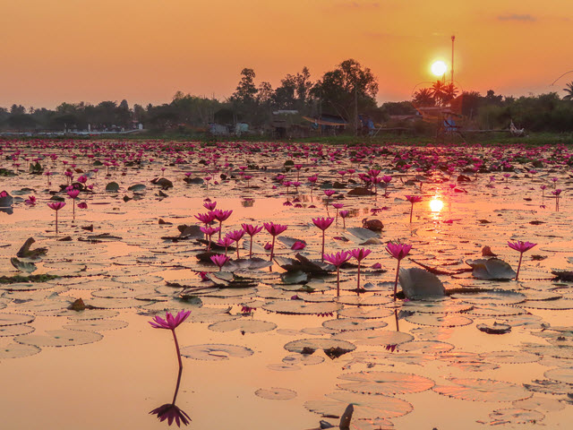
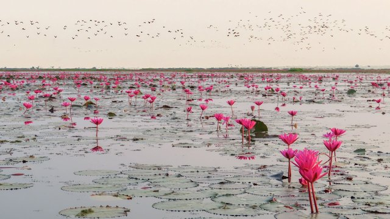
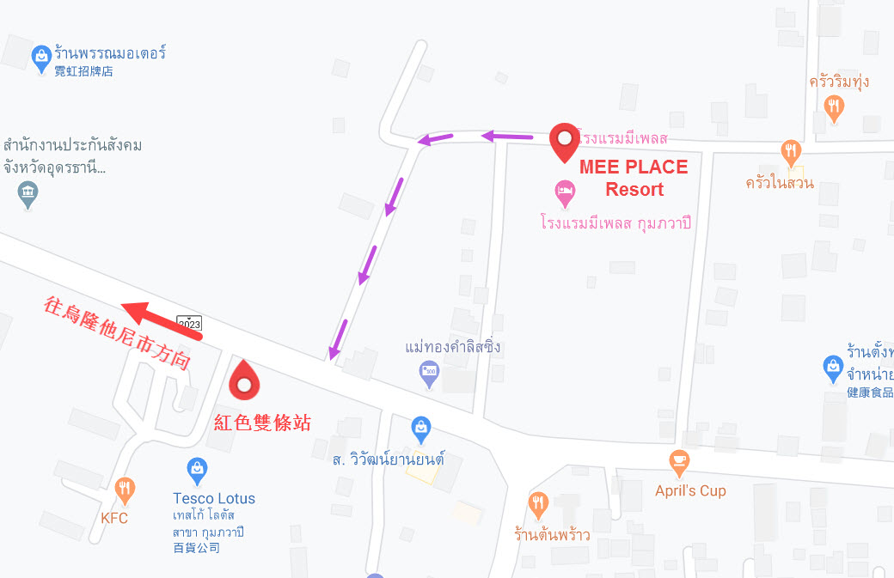

在泰國 東北部 的 烏隆他尼府 (Udon Thani / อุดรธานี) 有一個浩瀚無際的湖, 它的名稱是 坤帕瓦比湖 (英文是 Lake Kum-pha-wa-pi), 而當地人都叫它做 Nong Han。
坤帕瓦比湖 長約7公里, 闊約3公里, 水深不到 2米, 雖然說是一個湖, 但它其實是一個對 保護 生態環境很重要的濕地, 這裡 孕育了很多不同品種的魚類和動植物, 更為候鳥提供一個 舒適 安全的棲息地。

在一年中大部份時間, 這個湖看來都十分普通, 平平無奇, 絕對不會令遊客駐足欣賞。但是, 每年由12月初至 2月底這3個月的期間, 彷彿魔捧一揮, 景色煥然一新, 湖上過百萬朵 紅色品種的蓮花爭相綻放，景色非常壯麗, 曾經被美國 CNN 評為「世界第二大美麗奇觀」，是絕對值得遊覽的地方。
因為湖上的紅色蓮花有如一幅看不到盡頭的紅色地毯, 有如紅色的大海, 所以當地人將這個湖稱之為….. 紅蓮花海。
紅蓮花海 位於泰國 東北部 烏隆他尼府 的 坤帕瓦比縣 (Kum-pha-wa-pi Am-phoe), 離烏隆他尼市約 40公里。
因為烏隆他尼府位於泰國 東北部的北面, 所以大部份旅客都是從曼谷、呵叻府, 或者坤敬府乘巴士或火車前往, 途中必定會先經過紅蓮花海, 然後才抵達 烏隆他尼市的。
但很奇怪, 網上所有旅客都介紹先往離 紅蓮花海老遠的 烏隆他尼市, 然後再包車 掉頭返回紅蓮花海遊覽。這豈不是捨近求遠?
很明顯不是好的安排!
當我們研究完地圖後, 發覺 紅蓮花海 南面的湖畔 有一個看來頗為熱鬧的 坤帕瓦比鄉鎮, 那裡 離紅蓮花海南面的乘船碼頭很近, 大約只有 7公里, 是非常理想的落腳點。
我們就決定嘗試走走這條遊覽 紅蓮花海 的新路線!
Okay! 立即出發去 紅蓮花海!
*****
我們是從 坤敬府 出發, 乘火車到 坤帕瓦比 縣。
在 坤帕瓦比火車站 (Kumphawapi Railway Station) 下車。車站出口處就有 Tuk Tuk 往 坤帕瓦比鄉鎮, 每位30泰銖, 客滿便開車。
我們因為有兩個背囊, 想舒服一些, 也不想等, 所以包車往 坤帕瓦比鄉鎮, 車費是200泰銖。
坤帕瓦比火車站 離 坤帕瓦比鄉鎮 約 7公里, 沿途穿過很多樸素的村落, 十多分鐘便抵達我們落腳的民宿。
坤帕瓦比鄉鎮內 有兩三間民宿, 住宿應該不是問題。我們選擇了環境寧靜和優美的 MEE PLACE Resort 留宿一晚。
遊覽 紅蓮花海, 豈能錯過在湖中泛舟欣賞日出這最佳節目。所以辦理完入住手續後, 就立即請民宿負責人幫我們安排了 明天早上包 Tuk Tuk 往 紅蓮花海看日出的交通, 車費是 300泰銖。
*****
我們在翌日早上 6:30 出發。
因民宿離紅蓮花海南面的乘船碼頭只有 7公里, 不用 10分鐘便抵達。
遊紅蓮花海的船有兩種, 遊覽時間都是90分鐘。2人坐的小船是 300泰銖; 可容納 5人坐的大船是 500泰銖。
我們兩個人, 當然是選擇小的船啦!
船行駛了不到五分鐘已到達遍佈蓮花的紅蓮花海, 眼前是一片艷麗紅色的蓮花, 十分壯觀。
過了一會, 太陽慢慢的從東方昇起, 將天空及紅蓮花海染成橙色, 湖面金光閃爍, 景色美絕, 如夢如幻。千里迢迢來到這裡, 就是為了見證這動人的一刻, 不枉此行!
我們是今早第一隻艇進入紅蓮花海, 所經之處, 驚動了附近一帶晚上在這裡棲息的鳥兒 , 吱吱喳喳的紛紛飛上天空, 沿途萬鳥齊飛, 場面壯觀。
九十分鐘的快樂時光, 轉眼便過去了!
遊覽完 紅蓮花海, 回程時可以順道遊覽 猴子自然公園, 然後就返民宿吃早餐。
餐廳很寬敞, 環境很好, 窗明几淨, 十分舒適。早餐是自助形式, 有麵包、蛋糕、雞肉粥、炒粉絲、雞蛋、西瓜和各式飲料, 算是豐富了!
在酒店吃完早餐, 便正式結束了 紅蓮花海 這行程。
離開坤帕瓦比鄉鎮的公共交通, 主要有兩個方法。
第一:
乘 Tuk Tuk 往 坤帕瓦比火車站, 然後乘火車 北上往 烏隆他尼市, 或南下往坤敬、呵叻 或者 曼谷。
第二:
乘 紅色雙條往 烏隆他尼市。每二十分鐘就有一班車, 十分方便。至於紅色雙條站的位置, 就在 Tesco Lotus 超級市場的門前, 從 民宿步行約 五分鐘。
泰國 東北部 紅蓮花海 之旅 就在這裡結束了!
*****
謝謝收看!
如果喜歡, 請免費訂閱我的頻道, 按個 LIKE 和留下評論!